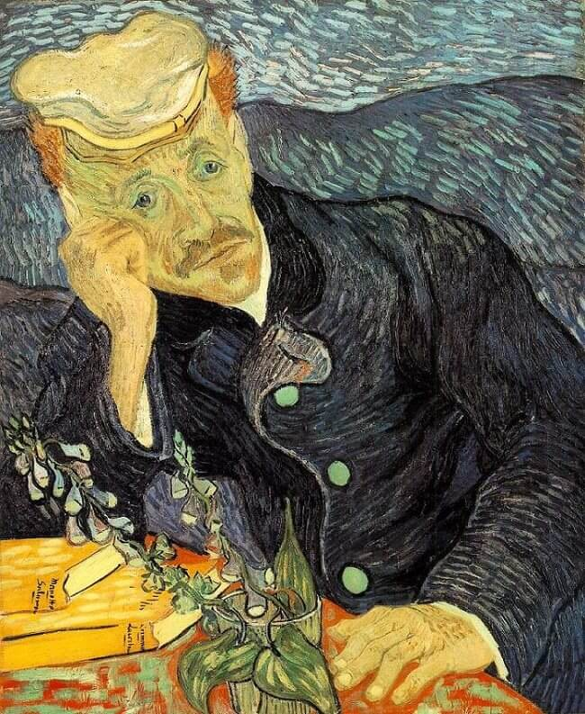
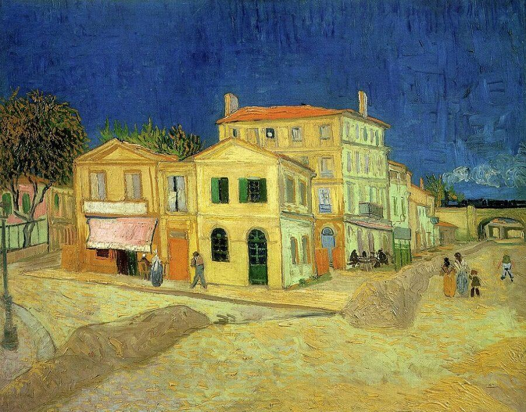
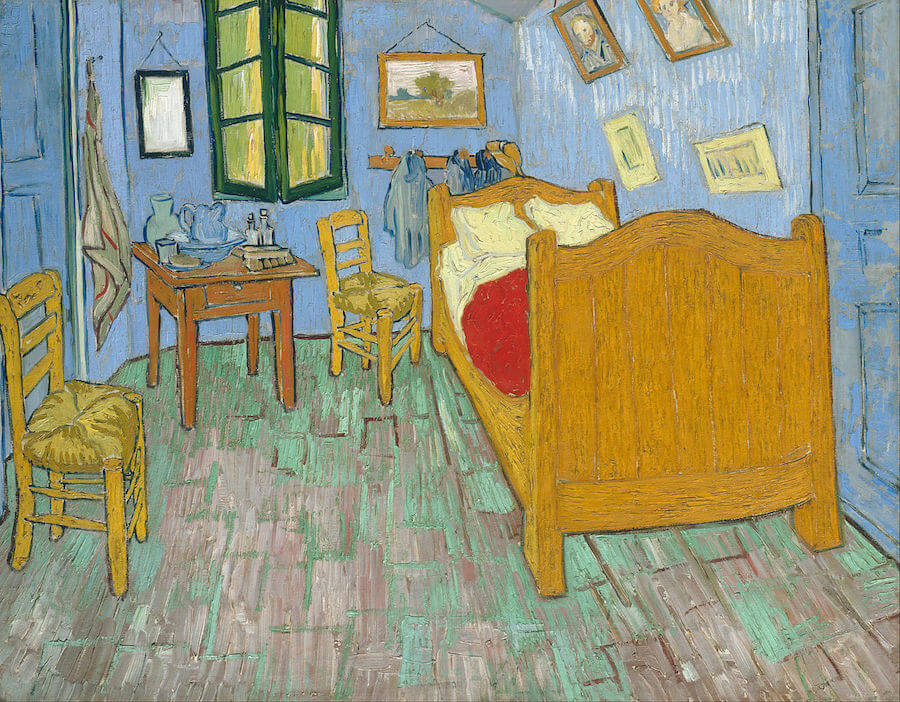

Vincent Van Gogh, born Vincent Willem van Gogh, was born on March 30th, 1853 in the town of Zundert located in the Netherlands.
He was the oldest out of six children and was the son of a pastor.
Influenced by his mother, Vincent was interested in art at a young age and drew expressive drawings.
During his teen years, Vincent briefly worked for his uncle's art dealership Goupil & Cie., and was transferred to the Goupil Gallery in London
where he was surrounded by art that sparked his artistic sensibility. In 1874 while in London, Vincent fell in love with Eugenie Loyer and when
she rejected his marriage proposal, he was distraught and his desire for human affection dwindled. He became resentful and began to discourage customers from buying art,
calling it "worthless," which resulted in him getting fired.
Vincent's lifestyle became more religious and he believed his calling was to become a preacher, thus he began to devote his life to God. During this time he found himself translating the Bible into other languages such as German and French. Vincent would find himself briefly living among the poor during this time period. This was short-lived as Vincent would turn to art for solace in 1880 and went to Brussels to study art. Vincent would return to the Netherlands where he would find himself painting about nature, experimenting with watercolor and oil paint, teaching himself new techniques. Vincent's subjects were still life, landscape, and figures. His first major masterpiece was the painting The Potato Eaters.
Vincent went on to study color theory and the works of Paolo Veronese, Eugene Delacroix and Peter Paul Reubens influenced the development of Vincent's art style and color palette. He would later move to Paris to live with his brother Theo, an art dealer, where he would paint portraits of friends and the landscape around him. During his time in Paris, Vincent's palette became colourful, his vision less traditional and by the summer of 1887 he was painting in pure colours and using brushwork that was pointillistic, a technique in which a multitude of small coloured dots are applied to the canvas so that when seen from a distance they create an optical blend of hues. Vincent left Paris and spent a lot of time painting nature, self-portraits, portraits of friends and houses (interior and exterior). Vincent found a place at the Yellow House where he could paint and have his friends come stay. He worked with Paul Gauguin, but their relations deteriorated because they had opposing ideas and were temperamentally incompatible. It is believed that after an argument with Ganguin, Vincent cut off his left ear with a razor.

After the incident and a brief period of being hospitalized, Vincent continued to paint, but after a few weeks he showed symptoms of severe mental disturbance that caused him to be sent back to the hospital. He later requested to be put in a medical asylum, where he would stay there for a year. The asylum garden became the main subject of his paintings during this time. During the early months of 1890, Vincent was incredibly depressed and had little motivation to paint and draw. On July 27th, 1890 Vincent shot himself in the chest with a revolver; however, he did not die immediately. Vincent's brother Theo came to visit him to be there by his side and on July 29th Vincent passed. He was 37 years old when he died.
Vincent did not sell many paintings during his lifetime, rather it was after his death that his work became popular. Theo died not long after Vincent died and Theo's wife Johanna van Gogh-Bonger, came into possession of Vincent's collection of art work after her husband passed. She played an important role in Vincent's fame as she set up exhibitions to display Vincent's work, garnering the attention of people around the globe. Over time, she sold hundreds of drawings and paintings and after her death, her son Vincent, named after his uncle Vincent Van Gogh, continued on to make sure Vincent's work was recognized.